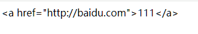
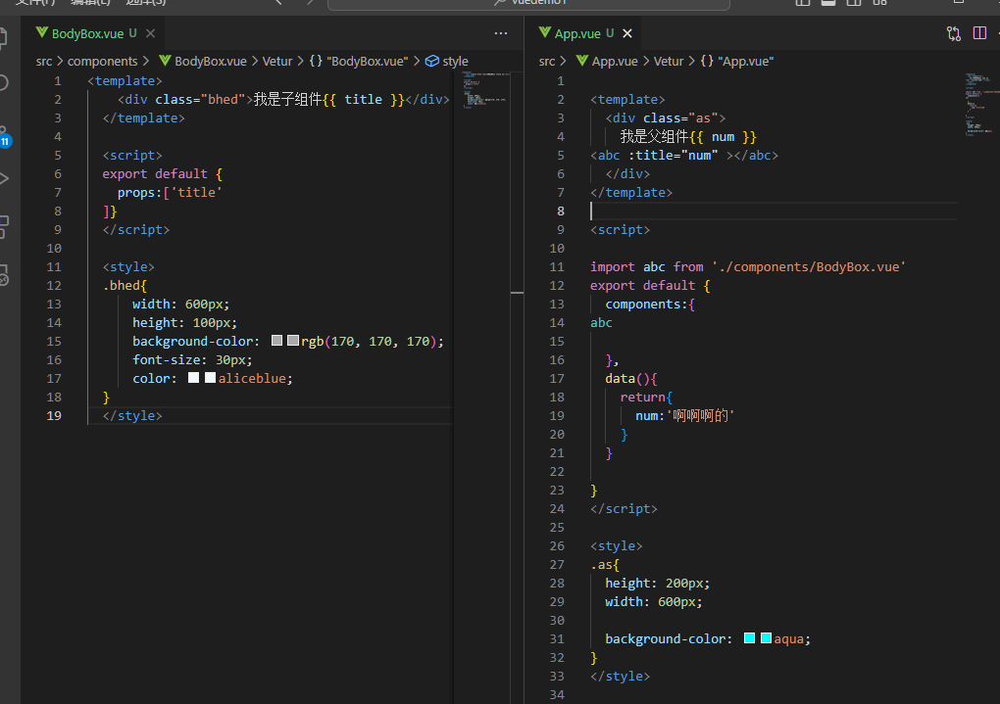
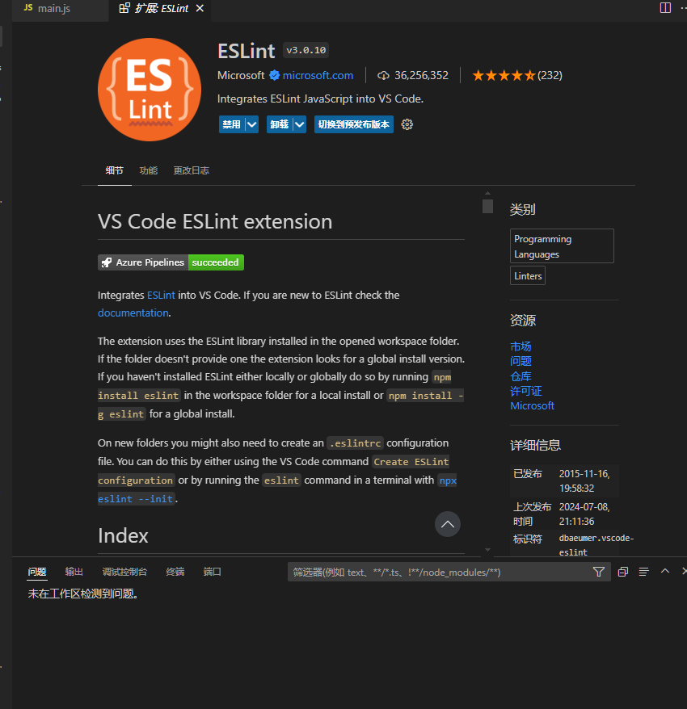

Vue2+Vue3教程——By Bug
前言
本笔记为站长学习过程中做的笔记内容，可能有遗漏或错误等，本笔记仅供参考，一切以官方文档为准，谢谢！
笔记参考资料： 前端新版Vue2+Vue3基础入门到实战项目全套教程 (itheima.com)
Vue.js - 渐进式 JavaScript 框架 | Vue.js (vuejs.org)
Vue入门
什么是Vue
Vue是一个构建用户界面的渐进式 框架 构建用户界面：基于数据渲染出用户所看到的界面
优点：大大提升开发效率
缺点：需要记忆一些规则
创建Vue实例
安装
xxxxxxxxxx<script src="https://cdn.jsdelivr.net/npm/vue@2.7.16/dist/vue.js"></script>
四个核心步骤：
准备容器
引包（开发版本/生产版本）
创建Vue实例（new Vue()）
指定配置项→渲染数据
xxxxxxxxxx<!-- 准备容器 --><div id="tex"> {{msg}}</div><!-- 引包-开发版本-包含完整注释和错误警告 --><!-- 一旦引入软件包,全局环境中就包含了Vue构造函数 --><script src="https://cdn.jsdelivr.net/npm/vue@2.7.16/dist/vue.js"></script><script> // 创建实例 const a = new Vue({ // 配置项 el: '#tex',//指定容器 data: {//提供数据 msg: "1222234aa1a"
}
})</script>
插值表达式
插值表达式是Vue的一种模板语法。
作用：利用表达式进行插值，将数据渲染到页面中。
语法：{{ 表达式 }}
xxxxxxxxxx<div id="tex"> {{msg}} </div>data: {//提供数据 msg: "1222234aa1a"}注意：
使用的数据必须存在
支持的是表达式，而不是语句：（if,for等不支持）
不能在标签属性中使用
响应式特征
数据响应式处理：数据变化时，视图自动更新
数据访问及修改方法：实例名.属性=值
例如：在下面的代码中，msg数据：abc先渲染到页面中，3秒之后变为123456并重新渲染到页面上
xxxxxxxxxx<div id="tex"> {{msg}}</div><!-- 引包-开发版本-包含完整注释和错误警告 --><!-- 一旦引入软件包,全局环境中就包含了Vue构造函数 --><script src="https://cdn.jsdelivr.net/npm/vue@2.7.16/dist/vue.js"></script><script> // 创建实例 const a = new Vue({ // 配置项 el: '#tex',//指定容器 data: {//提供数据 msg: "abc" } }) setTimeout(() => { a.msg = "123456" }, 3000);</script>
Vue开发者工具安装
浏览器Vue插件，使用插件可以方便快捷的修改数据
Vue指令
Vue会根据不同的指令，针对标签实现不同的功能
指令：带有v-前缀的特殊标签属性
V-html
和innerhtml作用相同，可以讲标签内容动态解析到标签中
插值表达式无法完成这个功能 当使用插值表达式插入标签时，会将标签以纯文本形式插入，而不会解析标签，如下所示
xxxxxxxxxx//使用插值表达式data: {//提供数据 msg: `<a href="http://baidu.com">111</a>`}
如果使用v-html属性插入，如下所示
xxxxxxxxxx<div id="tex" v-html="msg"></div><script src="https://cdn.jsdelivr.net/npm/vue@2.7.16/dist/vue.js"></script><script> // 创建实例 const a = new Vue({ // 配置项 el: '#tex',//指定容器 data: {//提供数据 msg: `<a href="http://baidu.com">点击我，跳转到百度</a>` }
})
</script>
V-show&&V-if
这两个属性都是控制元素的显示和隐藏的。 其中V-if是条件渲染
V-show
作用：控制元素的显示和隐藏 语法：v-show=”表达式“ 表达式值true显示，false隐藏 原理：相当于使用display:none来控制元素的显示和隐藏。 场景：适合频繁切换显示和隐藏的场景（例如：二级菜单等）
V-if
作用：控制元素的显示和隐藏 语法：v-if=”表达式“ 表达式值true显示，false隐藏 原理：根据条件控制元素的创建和移除来控制元素的显示和隐藏。 场景：要么显示，要么隐藏，不频繁切换的场景（例如：页面广告等）
v-else&&v-else-if
作用：辅助v-if进行判断渲染
xxxxxxxxxx<div id="tex"> <p v-if="gen===1">男</p> <p v-else-if="gen===2">女</p> <p v-if="sc>=80">优</p> <p v-else-if="sc>=60">良</p> <p v-else-if="sc<60">差</p></div><script src="https://cdn.jsdelivr.net/npm/vue@2.7.16/dist/vue.js"></script><script> const a = new Vue({ el: '#tex', data: { gen: 2, sc: 44 } })
</script>
v-on
作用：注册事件=添加时间监听+提供处理逻辑 语法：
v-on:事件名=”内联语句“
v-on:事件名=”methods中的函数名“
为了方便 v-on: 可简写为@
内联语句
实例：控制数字加减
xxxxxxxxxx<div id="tex"> <button v-on:click="gen--">-</button> <span>{{gen}}</span> <button v-on:click="gen++">+</button></div><script src="https://cdn.jsdelivr.net/npm/vue@2.7.16/dist/vue.js"></script><script> const a = new Vue({ el: '#tex', data: { gen: 100 } })</script>methods函数
xxxxxxxxxx<div id="a1"> <button @click="sho">显示/隐藏</button> <h1 v-show="s1">这是一段话</h1></div><script> const a = new Vue({ el: "#a1", data: { s1: true }, methods: { sho() { this.s1 = !this.s1 } } })</script>v-on调用传参
xxxxxxxxxx<button @click="sho(参数1，参数2,参数n...)">显示/隐藏</button>
案例：自动取款机
xxxxxxxxxx<div id="a1"> <h1>自动取款机</h1> <button @click="sho(-100)">取100元</button> <button @click="sho(-400)">取400元</button> <button @click="sho(200)">存200元</button> <h4>当前余额：{{money}}</h4>
</div><script> const a = new Vue({ el: "#a1", data: { money: 1200 }, methods: { sho(a) { if (this.money + a < 0) { alert("余额不足") } else { this.money += a } } } })</script>
v-bind
作用：动态的设置html的标签属性（src,url,title等）
语法：v-bind:属性名=“表达式” v-bind可以省略 直接写 :属性名=“表达式”
例如：我们想要动态渲染img标签的图片地址，宽度等
xxxxxxxxxx<div id="a2"> <img src="" :src="imgsrc" :width="w" alt=""></div><script> const a2 = new Vue({ el: "#a2", data: { imgsrc: "img/2.png", w: 300 } })</script>案例：图片轮播效果
xxxxxxxxxx<div id="a2"> <img src="" :src="imgsrc" :width="w" :h="h" alt=""></div><script> const a2 = new Vue({ el: "#a2", data: { imgsrc: "", w: 300, h: 300 } }) let n = 1;
const a3 = setInterval(() => { if (n > 5) { n = 1 } else {
a2.imgsrc = `./img/${n++}.png` console.log(a2.imgsrc) } }, 1500);v-bind操作class
语法：:class="对象、数组" 对象→key就是类名，值就是布尔值，值为true则有这个类，为false则妹有这个类 数组→数组中所有的类，都添加到盒子上，本质就是一个class列表
实例：为导航栏点击加背景颜色
xxxxxxxxxx<style> .pink { background-color: pink; }</style><ul id="a"> <li v-for="(a,b) in list" :class="{pink:b===act}" :key="a.id" @click="act=b">{{a.tx}}</li></ul><script> const aa = new Vue({ el: "#a", data: { act: 0, list: [ { id: 1, tx: "首页" }, { id: 2, tx: "秒杀" }, { id: 3, tx: "特价" } ], } })</script>v-bind操作style
语法：:style="样式对象"
xxxxxxxxxx<div :style="{color:'red','font-size':'30px'}">1</div>
v-for
作用：基于数据循环，多次渲染整个元素 v-for支持：数组、对象、数字
遍历数组语法： v-for=”(item,index) in 数组名“
xxxxxxxxxx<ul id="a5"> <li v-for="(item,index) in a6">{{item}}</li></ul><script> const ac = new Vue({ el: "#a5", data: { a6: ["吃饭", "睡觉", "打豆豆"] } })</script>案例：书架
xxxxxxxxxx<ul id="a7"> <li v-for="(item,index) in a8"> <span>{{item.name}}</span>- <span>{{item.author}}</span> <button @click="del(item.id)">删除</button> </li></ul><script> const ad = new Vue({ el: "#a7", data: { shows: true, a8: [ { id: 1, name: "《西游记》", author: "吴承恩" }, { id: 2, name: "《红楼梦》", author: "曹雪芹" }, { id: 3, name: "《水浒传》", author: "施耐庵" }, { id: 4, name: "《三国演义》", author: "罗贯中" } ] }, methods: { del(id) { this.a8 = this.a8.filter(item => item.id !== id) console.log(this.a8) } } })</script>v-for中的key
语法：:key=“唯一标识”
作用：给列表添加唯一标识，便于Vue进行列表项的正确排序复用
xxxxxxxxxx<ul id="a7"> <li v-for="(item,index) in a8" :key="item.id"> <span>{{item.name}}</span>- <span>{{item.author}}</span> <button @click="del(item.id)">删除</button> </li></ul>注意：
key只能是字符串或数字类型
key的值必须具有唯一性
推荐使用id作为key，不推荐使用数组下标
v-model
作用：给表单元素使用，双向绑定→可以快速或设置表单元素
数据变化→视图自动更新 视图变化→数据自动更新
语法：v-model="变量"
实例：登录
xxxxxxxxxx<div id="logform"> <input type="text" placeholder="请输入账号" v-model="users"><br> <input type="password" placeholder="请输入密码" v-model="pwds"> <button @click="loginbt">登录</button> <button @click="restbt">重置</button></div><script> const lg = new Vue({ el: "#logform", data: { users: "1", pwds: "123" }, methods: { loginbt() { console.log(`登录成功，账号：${this.users},密码：${this.pwds}`) }, restbt() { console.log("重置完成") this.users = "" this.pwds = "" } } })</script>应用于其他表单元素
常见的表单元素都可以用v-model绑定关联→快速设置和获取表单元素的值 它会根据控件的类型自动选取正确的方法，无需手动设置
输入框：input:text——value 文本域：textarea——value 复选框：input:checkbox——checked 下拉菜单：select——value
v-model原理
原理本质上是一个语法简写，例如应用在输入框上，就是value属性和input事件的合写 作用：提供数据的双向绑定 数据变，视图跟着变 :value 视图变，数据跟着变 @input
比如：子组件在设置下拉菜单传来的值时，是无法直接修改的，需要把v-model进行拆分
v-model等价于 :value ——@input
xxxxxxxxxx<template><div class="as"> <input type="text" v-model="msg"> <input type="text" :value="msg1" @input="msg1 =$event.target.value"> </div></template><script> export default { data(){ return{ msg:1, msg1:2 } } }</script>
v-model应用于组件
表单类组件封装
父传子：数据从父组件中传递过来，v-model拆解绑定数据
子传父：监听输入，子传父值给父组件进行修改
xxxxxxxxxx//父组件中<子组件标签 :ids='sc' @事件名='sc=$event'></子组件标签>
xxxxxxxxxx//子组件中<标签 :value='n' @change='ab'></标签>props:{ n:类型},methods:{ chan(e){ this.$emit('事件名',e.target.value) }}v-model简化代码
子组件中：props通过value接收，事件触发input
父组件中：v-model给组件直接绑定数据
指令修饰符
通过 “.” 指名一些指令的后缀，不同的后缀封装了不同的操作→简化代码
按键修饰符 @keyup.enter→键盘回车键监听
v-model修饰符 v-model.trim→去除首尾空格 v-model.number→转数字
事件修饰符 @事件名.stop→阻止冒泡 @事件名.prevent→阻止默认行为
更多指令修饰符，见官方文档
计算属性
基于现有的数据，计算出来的新属性。依赖的数据变化，自动重新计算
语法：
声明在computed配置项中，一个计算属性对应一个函数
使用方法和普通属性一样——{{ 计算属性名 }}
xxxxxxxxxxcomputed: {计算属性名() {计算逻辑代码return 计算结果;},
实例：购物车统计
xxxxxxxxxx<style> tr, td { border: 1px solid; }</style><table style="border: 1px solid;" id="sp"> <thead> <tr> <td>商品ID</td> <td>商品名</td> <td>商品单价</td> <td>数量</td> </tr> <tbody> <tr v-for="(a,b) in list" :key="a.id"> <td>{{a.id}}</td> <td>{{a.name}}</td> <td>{{a.price}}</td> <td>{{a.num}}</td> </tr> <tr> <td colspan="4"><span>总个数：{{sum}}件，总价：{{sump}}元</span></td> </tr> </tbody> </thead>
</table><script> const shop = new Vue({ el: " #sp", data: { list: [ { id: 1, name: "苹果", price: 3, num: 7 }, { id: 2, name: "香蕉", price: 3.5, num: 2 }, { id: 3, name: "榴莲", price: 26, num: 4 }, { id: 4, name: "梨", price: 4, num: 8 }, { id: 5, name: "葡萄", price: 13, num: 12 } ] }, computed: { sum() { return this.list.reduce((sum, it) => sum + it.num, 0) }, sump() { return this.list.reduce((sum, it) => sum + (it.price * it.num), 0) } }
})</script>
computed和methods的区别 computed计算出结果后可以缓存，下次在使用时直接使用缓存数据，除非数据变了才会重新计算 methods每使用一次就会被调用一次
计算属性的完整的写法
计算属性的默认写法是只能访问，不能修改的。 若要想修改，需要使用计算属性的完整写法。
语法如下：
xxxxxxxxxxcomputed: {计算属性名() {get(){计算逻辑代码return 计算结果;},set(){修改逻辑代码}}
watch 侦听器
作用：监视数据的变化，执行一些逻辑或异步操作 需求：翻译应用，左侧输入，右侧展示翻译结果
语法：
简单写法
xxxxxxxxxxdata:{name:"zhangsan",num:1},watch:{//数据属性和要监视的属性同名数据属性名(新数据，旧数据){业务逻辑、操作}}实例：文本实时展示框
xxxxxxxxxx<div id="tx"><textarea name="" id="" rows="10" v-model="oldv"></textarea><textarea name="" id="" rows="10" v-model="newv"></textarea></div><script>const b = new Vue({el: "#tx",data: {oldv: "",newv: ""},watch: {oldv(n) {n += "翻译完成"this.newv = n}}})</script>完整写法
添加额外的配置项
deep:true——对复杂类型深度监视
immediate:true——初始化立即执行一次handler方法
xxxxxxxxxxdata:{obj:{name:"zhangsan",num:1}},watch:{//数据属性和要监视的属性同名obj:{deep:true,函数名(新数据，旧数据){业务逻辑、操作}}}
综合案例：笔记本
xxxxxxxxxx<body> <style> * { margin: 0; padding: 0; box-sizing: border-box; }
body { background-color: cadetblue; }
#box { position: relative; width: 500px; margin: 200px auto;
background-color: wheat; }
#box h1 { width: 100%; text-align: center; margin-bottom: 30px; }
#box input { width: 480px; height: 50px; padding-left: 10px; font-size: 30px; border: 2px solid red; border-radius: 10px; margin-left: 10px; }
#box input:focus { outline: 0; }
#box button { position: absolute; top: 72px; right: 10px; height: 50px; width: 100px; border: 0; background-color: red; border-radius: 0 10px 10px 0; font-size: 20px; color: white;
}
ul:last-child { margin-bottom: 10px; }
li img { float: right; margin-top: 5px; height: 30px; margin-right: 20px; display: none; }
li:hover img { display: block; }
li { list-style: none; border-bottom: 1px solid #c9c5c5; font-size: 30px; color: #888; padding: 10px 0; }
#box font { display: inline-block; width: 40px; height: 40px; padding-left: 10px; }
#btm { margin-top: 5px; background-color: wheat; height: 30px; color: #4d4b4b; }
#btm :first-child { position: absolute; left: 10px;
}
#btm :last-child { position: absolute; right: 10px;
}
#btm :last-child:hover { cursor: default; } </style> <div id="box"> <h1>黄桑的记事本</h1> <input type="text" v-model="tex" placeholder="请输入任务"> <button @click="adddata">添加任务</button> <ul> <li v-for="(a,b) in list" :key="a.id"> <font>{{b+1}}.</font>{{a.tex}} <img src="./img/del.png" alt="" title="删除" @click="deldata(a.id)"> </li> </ul> <div id="btm"> <span>总计：{{list.length}} 个任务</span> <span @click="clsdata">清除任务</span> </div> </div>
<script> const box = new Vue({ el: "#box", data: { tex: "", imgshow: false, list: [] }, methods: { deldata(id) { this.list = this.list.filter(itm => itm.id !== id) }, clsdata() { this.list = [] }, adddata() { if (this.tex.trim() != "") { let j = { id: +new Date(), tex: this.tex } this.list.push(j) this.tex = "" } } } }) </script>
</body>
综合案例：水果购物车
xxxxxxxxxx<body> <style> * { margin: 0; padding: 0; box-sizing: border-box; }
table { width: 520px; margin: 10px auto; border-collapse: collapse; }
td, tr { border: 1px solid; text-align: center; }
thead { height: 25px; line-height: 25px; background-color: wheat; }
.bgc { background-color: #eadddd; }
tr img { width: 60px; }
.numbox button { width: 25px; height: 25px;
}
.numbox span { display: inline-block; width: 30px; }
.del { background-color: red; border: 0; padding: 4px 8px; color: white; border-radius: 5px; }
tbody tr>:first-child, tbody tr>:nth-child(2), tbody tr>:nth-child(3), tbody tr>:nth-child(6) { width: 80px; }
tbody tr>:nth-child(4), tbody tr>:nth-child(5) { width: 100px; }
tfoot { height: 50px; }
.allcheck { float: left; margin-left: 30px; line-height: 50px; }
.allcheck input { margin-right: 6px; }
.sumpbox { color: rgb(32, 140, 247); font-size: 30px; line-height: 50px; float: left; margin-left: 160px; }
.jiesuan { float: right; margin-top: 10px; margin-right: 30px; width: 80px; height: 30px; border: 0; background-color: rgb(101, 147, 245); border-radius: 10px; font-size: 14px; font-weight: 900; color: white; line-height: 30px; text-align: center; } </style> <table id="shopcar"> <thead> <tr :style="{ height:'40px'}"> <td colspan="6"> <h2>水果购物车</h2> </td> </tr> <tr> <td>选择</td> <td>图片</td> <td>单价</td> <td>个数</td> <td>小计</td> <td>操作</td> </tr> </thead> <tbody v-if="list.length>0"> <tr v-for="a in list" :key="a.id" :class="{bgc:a.checked}"> <td><input type="checkbox" v-model="a.checked" v-model="chooseone" id=""></td> <td><img :src="a.imgurl" alt=""></td> <td>{{a.price}}</td> <td class="numbox"> <button :disabled="a.num<=0" @click="a.num--">-</button> <span> {{a.num}}</span> <button @click="a.num++">+</button> </td> <td>{{(a.price*a.num).toFixed(2)}}</td> <td><button class="del" @click="deldata(a.id)">删除</button></td> </tr> </tbody> <tbody v-else> <tr> <td colspan="6" style="font-size: 30px; padding: 20px 30px; text-align: center; width: 500px;"> 🛒购物车被你清空啦！</td> </tr> </tbody> <tfoot> <tr> <td colspan="6"> <span class="allcheck"><input type="checkbox" name="" id="" v-model="chooseall">全选</span> <span class="sumpbox">{{topr}}元</span><button @click="jiesuan" class="jiesuan">结算({{tosum}})</button> </td> </tr> </tfoot> </table> <script> const dflist = [ { id: 1, checked: true, imgurl: "./img/fruit/菠萝.png", price: 6, num: 1 }, { id: 2, checked: true, imgurl: "./img/fruit/草莓.png", price: 3, num: 12 }, { id: 3, checked: true, imgurl: "./img/fruit/橙子.png", price: 4.4, num: 3 }, { id: 4, checked: true, imgurl: "./img/fruit/哈密瓜.png", price: 3.4, num: 3 }, { id: 5, checked: true, imgurl: "./img/fruit/梨子.png", price: 7.5, num: 7 }, { id: 6, checked: true, imgurl: "./img/fruit/荔枝.png", price: 6.5, num: 9 }, { id: 7, checked: true, imgurl: "./img/fruit/芒果.png", price: 6.8, num: 9 }, { id: 8, checked: true, imgurl: "./img/fruit/猕猴桃.png", price: 2.6, num: 6 }, { id: 9, checked: true, imgurl: "./img/fruit/苹果.png", price: 5.6, num: 5 }, { id: 10, checked: true, imgurl: "./img/fruit/桃子.png", price: 3.1, num: 5 }, { id: 11, checked: true, imgurl: "./img/fruit/西瓜.png", price: 0.9, num: 12 }, { id: 12, checked: true, imgurl: "./img/fruit/香蕉.png", price: 4.8, num: 9 } ] const a = new Vue({ el: "#shopcar", data: { list: JSON.parse(localStorage.getItem('list')) || dflist }, methods: { deldata(id) { this.list = this.list.filter(it => it.id !== id) }, jiesuan() { alert('结算成功！') this.list = this.list.filter((it, b) => it.checked !== true)
} }, computed: {
chooseall: { get() { return this.list.every(it => it.checked) }, set(v) { this.list.forEach(a => a.checked = v) } }, tosum() { return this.list.reduce((sum, a) => a.checked ? sum + a.num : sum, 0) }, topr() { return (this.list.reduce((sum, a) => a.checked ? sum + (a.num * a.price) : sum, 0)).toFixed(2) } }, watch: { list: { deep: true, handler(n) { localStorage.setItem('list', JSON.stringify(n)) } } } }) </script></body>
Vue生命周期
什么是生命周期
Vue的生命周期：一个Vue实例从创建到销毁的整个过程
生命周期的4个阶段
创建阶段
只会执行一次
将普通数据转换成响应式数据
挂载阶段
只会执行一次
渲染模板
更新阶段
可以执行多次
修改数据更新视图
销毁阶段
销毁实例
生命周期钩子
生命周期函数 vue生命周期过程中，会自动运行一些函数，被称为【生命周期钩子】，可以让开发者在【特定阶段】运行自己的代码
八个（4组）钩子函数
before Create（创建阶段前）
created（创建阶段后）——发送初始化渲染请求
before Mount（挂载阶段前）
mounted（挂载阶段后）——操作dom
before Update（更新阶段前）
updated（更新阶段后）
before Destroy（销毁阶段前）——释放Vue外的资源（定时器等）
destroyed（销毁阶段后）
案例：记账本
xxxxxxxxxx<body> <style> * { margin: 0; padding: 0; box-sizing: border-box; } </style> <div id="bigbox"> <div class="headbox"> <input v-model="names" type="text"> <input v-model.number="prices" type="text"> <button @click="adddata">添加账单</button> </div> <table> <thead> <tr> <td>编号</td> <td>消费项目</td> <td>消费金额</td> <td>操作</td> </tr> </thead> <tbody> <tr v-for="(a,b) in list" :key="a.id"> <td>{{b+1}}</td> <td>{{a.name}}</td> <td>{{a.price.toFixed(2)}}</td> <td><a href="" @click.prevent="del(a.id)">删除</a></td> </tr> </tbody> <tfoot> <tr> <td colspan="4">总计：{{sumprice}}元</td> </tr> </tfoot> </table> <div :style="{width:'400px',height:'400px'}" id="main"></div> </div>
<script> const a = new Vue({ el: "#bigbox", data: { names: '', prices: "", list: [] }, methods: { async del(id) { const d = await axios.delete(`https://applet-base-api-t.itheima.net/bill/${id}`) this.getlist() }, async adddata() { if (!this.names.trim()) { alert("名称不能为空") } if (typeof this.prices !== 'number') { alert("请输入正确价格")
}
const add = await axios.post('https://applet-base-api-t.itheima.net/bill', { creator: "huangsir", name: this.names, price: this.prices }) this.getlist() this.names = "" this.prices = "" }, async getlist() { const req = await axios.get('https://applet-base-api-t.itheima.net/bill', { params: { creator: "huangsir" } } ) this.list = req.data.data this.myChart.setOption({ series: [ { // data: [{ value: 123, name: "12" }] data: this.list.map(a => ({ value: a.price, name: a.name })) } ] }) }
}, computed: { sumprice() { return this.list.reduce((sum, item) => sum + item.price, 0).toFixed(2) } }, async created() { this.getlist()
}, mounted() { this.myChart = echarts.init(document.getElementById('main')); // 指定图表的配置项和数据 let a = [] this.list.forEach(element => { a.push({ value: element.price, name: element.name }) }); console.log(a) option = { title: { text: "消费账单", left: 'center' }, legend: { orient: "vertical", left: "left" }, series: [ { type: 'pie', name: "消费项目", radius: "50%", // data: [{ value: 123, name: "12" }] data: a } ] }; // 使用刚指定的配置项和数据显示图表。 this.myChart.setOption(option); }
})
</script></body>
工程化开发入门
工程化开发&&vue脚手架
介绍： Vue CLI是vue官方提供的一个全局命令工具 它可以帮我们快速创建一个开发Vue项目的标准基础架子（集成了webpack配置）
使用步骤
全局安装：yarn global add @vue/cli 或 npm i @vue/cli -g
查看vue版本：vue --version
创建项目架子：vue create 项目名（非中文）
启动项目：yarn serve 或 npm run serve（找到package.json）
脚手架目录文件介绍
组件化开发
组件化：一个页面可以拆分成一个个组件，每个组件都有自己独立的结构，样式和行为。 优点：便于维护，利于复用，提升开发效率 组件类型：普通组件、根组件
根组件：整个应用最上层的组件，包裹着所有普通的小组件
App.vue文件（单文件组件）的三个组成部分
结构（template）--只有一个根节点
样式（style）--支持less，需要安装less和less-loader
行为（script）
组件注册
普通组件的局部注册
局部注册：只能在注册的范围内部使用
创建.Vue文件（三个组成部分）
在使用的组件内导入并注册
注意：组件名使用大驼峰命名法
语法：
xxxxxxxxxx//先创建一个小vue组件import 组件对象 from 'vue文件路径'export default{components:{//局部注册"组件name":组件对象}}使用： 直接将组件名当作HTML标签使用即可。即：<组件名></组件名>
普通组件的全局注册
全局注册：所有组件内部都可以使用
创建.vue文件
main.js进行全局注册
xxxxxxxxxx//在main.js中进行操作//导入组件import 组件对象 from 'vue文件路径'//调用Vue.component进行全局注册，一次只能注册一个组件//Vue.component('组件名',组件对象)Vue.component('组件名',组件对象)使用方法和局部注册方法相同，作为HTML标签使用
scoped样式冲突
全局样式（默认）：会影响所有组件，会造成多个组件之间的样式冲突问题
局部样式：scoped下的样式，只作用于当前组件，为style标签加上scoped属性
scoped原理：
当前组件内的标签都被添加了data-v-hash值的自定义属性
css选择器也被添加了该自定义属性
效果：必须是当前组件的元素，才会有这个自定义属性，样式才会被生效
xxxxxxxxxx<style scoped></style>
data函数
一个组件的data选项必须是一个函数。→保证每一个组件实例，维护独立的一份数据对象。
语法如下：
xxxxxxxxxxdata(){return{数据name:值}}
组件通信
组件通信即组件与组件之间的数据传递
组件的数据是独立的，无法直接访问其他组件的数据
想要访问其他组件的数据，需要使用组件通信
组件通信解决方案
父子关系：props 和 $emit 非父子关系：provide 和 inject eventbus 通用解决方案：Vuex（适合复杂业务场景）
组件通信语法
父传子
父组件通过props将数据传递给子组件

子传父
子组件使用#emit通知父组件修改更新
父组件对消息进行监听
父组件提供修改逻辑
非父子通信
provide 和 inject 实现跨层级的数据共享，即在顶层元素中提供一组数据，使得子孙后代中的所有数据都可以访问到
在父组件provide中提供数据
xxxxxxxxxxprovide:{return{//普通类型数据（非响应式数据）//复杂类型的数据（响应式数据）}}
prop详解
什么是prop？ 组件上注册一些自定义属性
prop作用：向子组件传递数据
prop校验
作用：为组件的prop指定验证要求，不符合要求的，控制台会显示错误提示，帮助开发者快速发现错误
四种校验：1. 类型校验 2.非空校验 3.默认值校验 4.自定义校验
语法：
xxxxxxxxxxprops:{校验的属性名：类型}
完整写法
xxxxxxxxxxprops:{校验的属性名:{type:类型,//类型校验required:true,//是否必填（非空）default:值,//默认值validator(value){//自定义校验逻辑return 是否通过校验}}}
自己的数据随便改（谁的数据谁负责）
prop传过来的是数据不能直接修改 单项数据流，父组件数据更新，会单项向下流动，影响子组件，这个数据流动是单向的
实例：商品数量加减
xxxxxxxxxx//父VUE
<template> <div class="as"> 我是父组件<abc :title="num" @cdata="chdata"></abc>
</div></template>
<script>
import abc from './components/BodyBox.vue'export default { components:{abc }, data(){ return{ num:123 } }, methods:{ chdata(a){ console.log(a) this.num=a } }}</script>
<style>.as{ height: 200px; width: 600px; background-color: aqua;}</style>
xxxxxxxxxx//子模块<template> <div class="bhed"> <button @click="changeadd">-</button> <button @click="changeadd">+</button> </div> </template> <script> export default { props:['title'], methods:{ changeadd(){ this.$emit('cdata',this.title+1) }, changesub(){ this.$emit('cdata',this.title-1) } }} </script> <style> .bhed{ width: 600px; height: 100px; background-color: rgb(170, 170, 170); font-size: 30px; color: aliceblue; } </style>
进阶语法
sync修饰符
作用：实现子组件和父组件的双向绑定，简化代码
特点：prop属性名可以自定，非固定为value
本质：:属性名 和 @update:属性名 的合写
xxxxxxxxxx<子组件标签 :属性名.sync='name'></子组件标签>
xxxxxxxxxx//示例：//父组件<template><div class="as"> 我是父组件 <abc :title.sync='num'></abc> </div></template>
<script> import abc from './components/BodyBox.vue' export default { components:{ abc }, data(){ return{ num:123, } }, methods:{ chdata(a){ this.num=a } } }</script>
<style>
</style>
//子组件<template><div class="bhed"> <button @click="changesub">-</button> <button @click="changeadd">+</button> </div></template>
<script> export default { props:{ title:Number }, methods:{ changeadd(){ this.$emit('update:title',this.title+1) }, changesub(){ this.$emit('update:title',this.title-1) } } }</script>
<style>
</style>
ref和$refs
作用：利用ref和$refs可以获取dom元素和组件实例
特点：查找范围--当前组件内（更加精准）
获取dom
目标标签--为目标标签添加ref属性
xxxxxxxxxx<div ref='name'> </div>在恰当时机（dom元素渲染完成后 ）时，可以通过this.$refs.name的方法获取目标标签
获取组件实例
目标组件--为目标组件添加ref属性
xxxxxxxxxx<组件名 ref='name'> </组件名>在恰当时机（dom元素渲染完成后 ）时，可以通过this.$refs.name.组件方法() 获取目标组件方法
$nextTick、Vue异步更新
$nextTick：等待DOM元素更新完成之后，才会触发执行此方法内部的函数
语法：
xxxxxxxxxxthis.$nextTick(()=>{ //操作逻辑})需求：点击编辑标题，编辑框自动聚焦
xxxxxxxxxx<template><div class="as"> <div v-if="!isshow"><h1></h1><button @click="show">编辑标题</button></div> <div v-else><input v-model="texnew" ref="inp" type="text"><button @click="yes()">确认</button></div> </div></template>
<script> export default { data(){ return{ isshow:false, tex:'我是默认标题', texnew:'' } }, methods:{ show(){ this.isshow=true this.$nextTick(()=>{ this.$refs.inp.focus() }) }, yes(){ this.isshow=false this.tex=this.texnew this.texnew='' } } }</script>
自定义指令
之前的（v-model,v-html,v-for,等）称为内置指令
自定义指令：自己定义的，封装了一些dom操作，扩展额外功能的指令
自定义指令可以应对更加复杂的场景
基本语法
局部注册
xxxxxxxxxx<template><div class="bhed"> <input v-focu type="text"> </div></template>
<script> export default { methods:{}, directives:{ focu:{ inserted(f){ f.focus() } } } }</script>
<style>
</style>全局注册
xxxxxxxxxx//在main.js中进行全局注册Vue.directive('focus', { inserted(f) { f.focus() }})
指令的值
需求：实现一个color指令——传入不同的颜色，给标签设置不同的文字颜色
语法：在绑定指令时，通过 ’=‘ 的形式作为指令 绑定 具体的参数值
xxxxxxxxxx<div v-color='color'>我是改变颜色的文字</div>
通过binding.value可以拿到指令的值，指令值修改会触发update函数
v-color指令的封装
案例：输入框输入一个颜色，修改字体颜色
xxxxxxxxxx<template><div class="bhed"> <div v-color="color" >112312321312</div> <div v-color="oldcolor" >112312321312</div> <input v-focu v-model="color" type="text"> <input v-focu v-model="oldcolor" type="text"> </div></template>
<script> export default { data(){ return{ color:'red', oldcolor:'green' } }, directives:{ focu:{ inserted(f){ f.focus() } }, color:{ inserted(el,binding){ el.style.color=binding.value }, update(el,binding){ el.style.color=binding.value } } } }
插槽
作用：可以让组件内部的一些结构支持自定义
需求：一个弹窗提示框，结构相同，内容不同，希望内容部分支持自定义
默认插槽
插槽的基本语法：
组件内需要定制的结构部分，改用<slot></slot>进行占位
在使用组件时，<组件></组件>标签内部，传入结构替换slot
后备内容(插槽默认值)
通过插槽完成内容的定制，传入什么内容就显示什么内容。如果什么都不显示，则是空白内容。影响效果，所以为插槽要设置默认内容
插槽后背内容：封装组件时，可以为<slot>插槽提供后备内容
具名插槽
在开发中，一个组件内部可能有多处结构，需要传入多个内容进行定制。默认问题无法满足需求，需要使用具名插槽。
语法：
多个slot使用name属性区分名字
使用 <template v-slot:name></template>传入对应的值
作用域插槽
作用域插槽是插槽的一个传参语法，并不属于插槽的分类
作用域插槽：定义slot插槽的同时是可以传值的。给插槽上可以绑定数据，将来使用组件时可以用
应用场景：封装表格组件。如图
父传子，动态渲染表格内容
使用默认插槽，定制操作列
删除或查看都需要用到当前项的ID，属于组件内部的数据通过作用域插槽传值绑定，进而使用。
基本使用步骤：
给solt标签，用添加属性的方式传值
xxxxxxxxxx<solt :id='itme.id' msg='测试文本内容'></solt>所有添加的属性，都会被收集到一个对象中。
xxxxxxxxxx{id:xxx,msg:'测试文本内容'}在template中，通过‘ #插槽名=“boj” ’的方法接收，默认插槽名为default
xxxxxxxxxx<组件 #default='abc'>//若在button按钮中使用id<button @click='函数(abc.id)'></button></组件>
路由
单页应用程序
SPA-Single Page Application
所有功能都在一个html页面实现
例如：网易云音乐官网
| 类型 | 实现方式 | 页面性能 | 开发效率 | 体验 | 首屏加载 | SEO |
|---|---|---|---|---|---|---|
| 单页 | 一个html页面 | 按需更新 性能高 | 高 | 很好 | 慢 | 差 |
| 多页 | 多个html页面 | 整页更新 性能低 | 中 | 一般 | 快 | 好 |
路由概念
单页面应用需要按需更新，首先要明确：访问路径和组件的对应关系
Vue中的路由：反映 路径和组件的映射关系
vueRouter(插件)基本使用
vue官方的路由插件，是一个第三方插件包 官方文档：介绍 | Vue Router (vuejs.org)
作用：修改地址栏路径时，切换显示匹配的组件
使用步骤(main.js中的操作)（5+2）
5个基础步骤
下载模块（vue2使用3.6.5版本）
xxxxxxxxxxnpm i vue-route@3.6.5引入
xxxxxxxxxximport vuer from 'vue-router'安装注册
xxxxxxxxxxVue.use(vuer)创建路由对象
xxxxxxxxxxconst router = new vuer()注入，将路由对象注入到new vue实例中，建立关联
xxxxxxxxxxnew Vue({render: h => h(App),router}).$mount('#app')完成后可以看到地址栏出现（/#/)，即为安装成功
2个核心步骤
创建需要的组件（views）目录，配置路由规则
xxxxxxxxxximport hello from './views/ShowHello.vue'import world from './views/ShowWorld.vue'const router = new vuer({routes: [{ path: '/hello', component: hello },{ path: '/world', component: world }]})配置导航，配置路由出口（路径匹配的组件显示的位置）
xxxxxxxxxx<div><a href="#/hello">123</a>,<a href="#/world">456</a></div><div><!-- 使用router-view控制组件显示的位置 --><router-view></router-view></div>
组件目录存放
组件分类的主要目的：更加便于维护
src/views文件夹
存放页面组件--用于展示页面--配合路由使用
src/components文件夹
存放复用组件--展示数据--常用于复用
路由模块封装
所有路由配置都堆在main.js中不合适，需要将路由模块抽离出来，拆分的模块更加利于维护
将原来main.js中的路由配置信息写到一个新的js文件中（如：index.js）
xxxxxxxxxx//导包import Vue from 'vue'import vuer from 'vue-router'// 初始化Vue.use(vuer)// 导入组件import hello from '../views/ShowHello.vue'import world from '../views/ShowWorld.vue'// 创建对象const router = new vuer({ routes: [ { path: '/hello', component: hello }, { path: '/world', component: world } ]})export default router
声明式导航&导航高亮
导航高亮
需求：实现导航高亮
vue-router提供了一个全局组件，用于取代a标签
xxxxxxxxxxto与href作用相同，提供地址，是必填选项<router-link to="/hello">显示hello</router-link>
xxxxxxxxxx<div> <router-link to="/hello">显示hello</router-link><br> <router-link to="/world">显示world</router-link> <!-- <a href="#/hello">显示hello</a>,<a href="#/world">显示world</a> --></div>当元素被选中时，会自动添加class属性
xxxxxxxxxxrouter-link-exact-active router-link-active
可以通过这两个属性为导航元素添加高亮属性
xxxxxxxxxxa.router-link-active{background-color: red;}
两个类名的作用
router-link-active 模糊匹配（用的多） 可以匹配to="/my" /my/a /my/b 。。。
router-link-exact-active 精确匹配 只能匹配to="/my"
自定义高亮类名
在创建对象时使用 linkActiveClass: '类名1', linkExactActiveClass: '类名2'，配置 模糊匹配类名 和 精准匹配类名
xxxxxxxxxxconst router = new vuer({ routes: [ { path: '/hello', component: hello },//模糊匹配类名 { path: '/world', component: world }//精确匹配类名 ], linkActiveClass: 'lac', linkExactActiveClass: 'leac'})跳转传参
目标：在跳转路由时进行传值
方法1：查询参数传参
语法格式如下： to='/路径?参数名=值&参数名=值...'
取得传过来的值 $route.query.参数名 在created等函数中，使用该值需要使用this.$route.query.参数名取值
方法2：动态路由传参
配置动态路由，path: '/路径/:words'（：不能省略）
xxxxxxxxxxconst router = new vuer({routes: [{ path: '/hello/:words', component: hello },{ path: '/world/:words', component: world }]})配置导航链接
xxxxxxxxxx<router-link to="/路径/参数">xxx</router-link><br><router-link to="/hello/showhello">显示hello</router-link><br><router-link to="/world/showworld">显示world</router-link>对应页面组件接收传递过来的值
xxxxxxxxxx$route.params.参数名
注意：该参数表示必传参数，若不传入参数，就无法匹配到页面，因此可以加可选符‘？’
xxxxxxxxxxconst router = new vuer({ routes: [ { path: '/hello/:words?', component: hello }, { path: '/world/:words?', component: world }//words?表示该参数为可选参数 ]})
VUE路由重定向
网页打开时，url默认是 /路径，未匹配到组件时，会出现网页空白问题，影响体验
重定向：匹配到某一路径后，强制跳转到path路径。
语法：{path:匹配的路径,redirect:重定向的路径}
xxxxxxxxxxconst router = new vuer({routes: [{ path: '/hello/:words?', component: hello },{ path: '/world/:words?', component: world },{ path: '/world', redirect: home }]})
路由404
xxxxxxxxxx//导包import Vue from 'vue'import vuer from 'vue-router'// 初始化Vue.use(vuer)// 导入组件import hello from '../views/ShowHello.vue'import world from '../views/ShowWorld.vue'import nofind from '../views/NoFind.vue'//导入404组件
// 创建对象const router = new vuer({ routes: [ { path: '/', redirect: '/hello' }, { path: '/hello/:words?', component: hello }, { path: '/world/:words?', component: world }, { path: '*', component: nofind }//未找到网页组件时，使用404组件
]})export default router
路由模式
hash路由（默认）：地址栏中带有# http://localhost:8080/#/hello
history路由（常用）：http://localhost:8080/hello (需要服务器支持)
xxxxxxxxxx//配置方法const router = new vuer({mode: 'history'})
编程式导航
需求：点击按钮实现跳转效果。
编程式导航：使用js代码进行跳转
两种语法：
path路径跳转（简单方便）
xxxxxxxxxxthis.$router.push('路由路径')xxxxxxxxxx<button @click="gowd">显示world</button><script>export default {methods: {gowd() {this.$router.push({path: '/world'})}}}</script>name命名路由跳转 首先要为路由起名字
xxxxxxxxxxconst router = new vuer({routes: [{ name: 'wd', path: '/world/:words?', component: world },],mode: 'history'})xxxxxxxxxxmethods: {gowd() {this.$router.push({name: 'wd'//使用})}}
编程式导航传参
编程式导航的两种语法均支持查询参数传参和路由传参
传参语法见： 声明式导航传参方法
xxxxxxxxxxmethods: { gowd() { this.$router.push({ path: "/world", query: { tex: "我成功完成传参啦！" } }) }}//完整的写法更适合传参/*this.$router.push({ path: "路径", query: { 参数名1:"值1", 参数名2:"值2" } })*/动态路由传参
xxxxxxxxxxthis.$router.push({path: "路径",params: {参数名1:"值1",参数名2:"值2"}})
自定义创建项目
基于VueCli自定义创建项目架子
创建项目
安装脚手架→创建项目→选择自定义
选择项目 babel、router、css、linter
等待项目创建完成......
ESlint代码规范
代码规范：一套写代码的规则。
手动修正代码规范
根据错误提示的位置，一项一项进行手动修正。
可以在EsLint规则表中查找错误含义
自动修正代码规范
基于vscode插件ESlint高亮错误，并配置自动修复错误 
添加vs code配置
xxxxxxxxxx// 保存时自动修复错误"editor.codeActionsOnSave": {"source.fixAll": true},// 保存时不自动格式化代码"editor.formatOnSave": false
vuex
vuex：是一个状态（数据）管理工具，管理vue通用数据（多组件共享的数据）
使用场景
某个状态在很多组件中都要使用(个人信息)
多个组件共同维护一份数据（购物车信息）
优势：
共同维护了一份数据，数据集中化管理
响应式变化
操作简捷（vuex提供了一些辅助函数）
使用方法
基于脚手架创建项目，构建多组件共享数据环境 创建一个根组件和两个子组件
创建一个空仓库
安装vuex
xxxxxxxxxxnpm install vuex@3新建vuex模块文件 在store文件夹下创建index.js，存放vuex
创建仓库 Vue.use(Vuex) 创建仓库new Vuex.Store()
main.js导入挂载
xxxxxxxxxximport Vuex from '../../node_modules/vuex'import Vue from 'vue'Vue.use(Vuex)const store = new Vuex.Store({})export default store提供、访问vuex数据
提供数据——在创建的仓库内添加store配置对象
xxxxxxxxxxconst store = new Vuex.Store({state: {texts: '我是仓库中的内容！',dea: 123}})使用store直接 访问数据——this.$store
在模板中：{{ $store.state.dea }}
在组件逻辑内：this.$store.state.dea
在JS模块内：store.state.dea
xxxxxxxxxx//app.vue<template><div id="app"><div>我是跟组件-----</div><com1></com1><com2></com2></div></template><script>import com1 from './components/SonCom1.vue'import com2 from './components/SonCom2.vue'export default {components: {com1, com2}}</script>//子组件1<template><div>我是组件1-----<button @click="change">+1</button></div></template><script>export default {methods: {change () {this.$store.state.dea++console.log(this.$store.state.dea)}}}</script>//子组件2<template><div>我是组件2-----<button @click="change">-1</button></div></template><script>export default {methods: {change () {this.$store.state.dea--console.log(this.$store.state.dea)}}}</script>所有组件都可以使用到仓库有内部的数据
通过辅助函数 mapState是辅助函数，可以帮我们把store中的数据自动映射到组件的计算属性中。
xxxxxxxxxximport { mapState } from 'vuex'export default {computed: {...mapState(['dea', 'texts'])//展开}}
修改数据
mutations
state中的数据不能直接修改，需要使用mutations
定义mutations对象，对象中存放了修改state的方法 所有mutations函数的第一个形式参数都是state
xxxxxxxxxxconst store = new Vuex.Store({state: {texts: '我是仓库中的内容！',dea: 123},mutations: {addnum (s) {s.dea += 1},subnum (s) {s.dea -= 1}}})在组件中使用定义的方法
xxxxxxxxxxthis.$store.commit('方法名')在组件传参
xxxxxxxxxxthis.$store.commit('方法名',参数)
mapMutations
辅助函数mapMutations，映射方法，和mapstate相似，它是把位于Mutations中的方法提取出来，映射到组件methods中 在函数中可以使用this.方法名调用
xxxxxxxxxx<template><div>我是组件1-----
<button @click="addnum">+1</button> </div>
</template>
<script> import { mapMutations } from 'vuex' export default { methods: { mapMutations(['addnum', 'subnum']), change () { this.addnum() } } }</script>
actions
actions：处理异步操作 需求：1秒之后，修改xxx数据
使用方法：
提供actions方法
xxxxxxxxxxactions:{setnum('仓库数据name','需要修改的值'){setTimeout(()=>{//逻辑代码},1000)}}在页面中调用（dispatch）
xxxxxxxxxxthis.$store.dispatch(异步方法名,值)
实例：一秒修改一次数值
xxxxxxxxxx//在main.js中添加actionsactions: { changenumauto (contex, num) { setInterval(() => { contex.commit('addnum', num) }, 1000) }}xxxxxxxxxx//在模块中调用设置好的异步方法methods: { //this.$store.dispatch('异步方法名', 传参) change () { this.$store.dispatch('changenumauto', 100) }}辅助方法mapAcitons，映射方法
getter